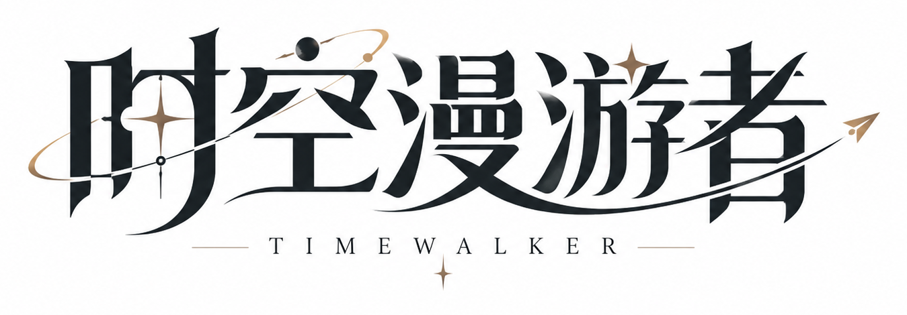
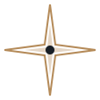
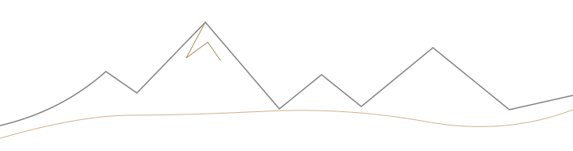
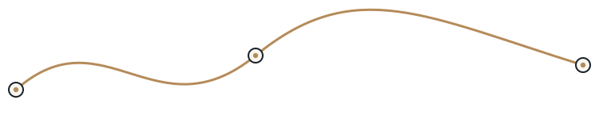
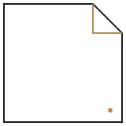
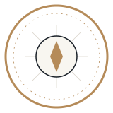
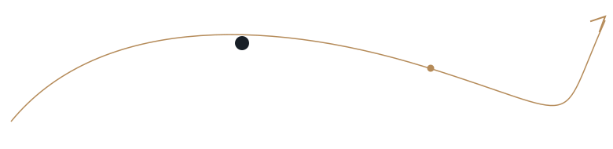
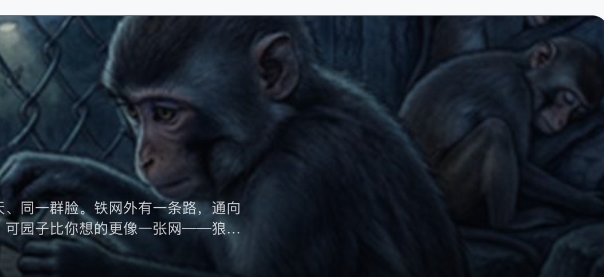

TIMEWALKER · NO. 001 / A NIGHT STORY
在夜色中，
走出那道铁网。
红山动物园 · 黑神话悟空
你是那只不安分的猴子。铁网外的世界，比想象中更像一张网。今夜，你要决定下一步。

DESIGN SYSTEM 1.1让锐利的字标成为所有界面的识别锚点。墨色负责功能，金色负责引导视线；细线与刻度组织信息，尖角与切角建立精度。不再依赖默认蓝色与大面积圆角。
TIMEWALKER · TRIP EXPERIENCE ENGINE
“穿越时间与空间，
遇见更大的世界。”

方向 · 轨迹 · 精度 · 故事
远山线
路径轨迹
裁切角
探索印章深墨黑是主 CTA；轨道金不做大面积按钮填色。
不同模块不同几何职责，不再一律 rounded-2xl。
红山动物园 · 黑神话悟空
你是那只不安分的猴子。铁网外的世界，比想象中更像一张网。今夜，你要决定下一步。

铁网裂开了一条缝。晚风从那里吹过，像有人在悄悄呼唤你的名字。
01 / 脚步声靠近了。
示意地图为抽象背景，不提供导航精度。实际应用应保留原高德地图与功能事件，只替换叙事浮层、路线节点和操作视觉。

控件 4px、普通面板 6px、精密切角仅用于封面与叙事强调。金色是导航性装饰，而不是默认功能按钮。